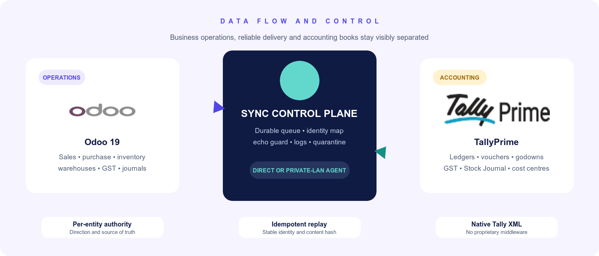
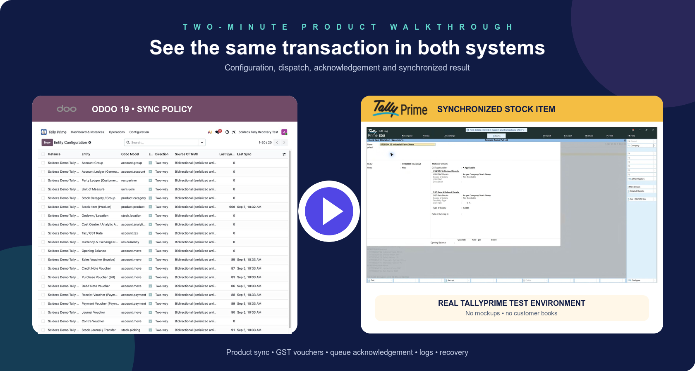

20 entity typesMasters, vouchers and inventory
GST-readyCGST, SGST and IGST
Two topologiesDirect or private-LAN agent
Round-trip testedFresh-database recovery
COMPLETE FUNCTIONAL COVERAGE
One connector across accounting and inventory
Standard structures are supported in both directions unless the boundary is identified below.
CONTROLLED BIDIRECTIONAL ARCHITECTURE
Two systems. One visible synchronization flow.

Per-entity authorityDirection and source of truth
Idempotent replayStable GUID, hash and identity map
Native XML gatewayDirect route or private-LAN agent
SECURE DEPLOYMENT CHOICES
Reach Tally without publishing port 9000.
Choose the topology that matches where Odoo and TallyPrime run.
OPTION ADirect gateway
Odoo reaches a protected Tally XML gateway through private routing, VPN or an authenticated reverse proxy.
OPTION BPrivate-LAN agent
A lightweight local agent reaches Tally and communicates with Odoo using outbound HTTPS, tokens, leases and heartbeats.
Security rule: never expose an unauthenticated Tally XML gateway directly to the public internet.
REAL ODOO 19 SCREENSOperate everything from one control centre
Configure, monitor, diagnose and recover through native Odoo views.
STANDARD ODOO BUSINESS RECORDSUsable results—not data trapped in middleware
Products, invoices, bills, payments, journals and transfers appear in their native applications.
TWO-MINUTE PRODUCT WALKTHROUGHSee Odoo and TallyPrime work side by side
Watch configuration, product synchronization, queue acknowledgement and the matching result inside live TallyPrime.

Select the preview to watch on YouTube. A link is used because Odoo Apps does not reliably retain embedded video players.
FREE SOFTWARE • OPTIONAL EXPERTISE
Start with the connector. Bring Scidecs when you need us.
Readiness assessment, secure deployment, mapping, migration, reconciliation, UAT, training, support and custom development are available without locking software behind a paid edition.
www.scidecs.comContact Scidecs
Odoo 19 Community & Enterprise • Odoo.sh & on-premise • LGPL-3
Odoo Apps listing • hello@scidecs.com • www.scidecs.com
Independently developed by Scidecs. Tally and TallyPrime are trademarks of their respective owner. Odoo is a trademark of Odoo S.A.